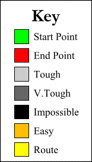

Applet by James Macgill
This is a simple interactive implementation of the A* path finding algorithm.
astar.zip contains all of the class and java files you need as well as some example
maps.
You can run AStarApplet.class both as an applet and as an application.
As an application you can save new maps.
(right click on the above link and choose 'save link as' if Netscape gets confused)
Send me some feedback.
(A quick overview for now, I'll go into more depth later)
The algorithm searches outwards from the start point adding up the cost of traversing each cell.
It stores the distance each cell is from the start point and moves on.
When it reaches the end point it searches back, looking for the cell with the shortest distance from the start
each step.
The applet has been deliberately slowed down so that you can see what is going on.
There are now two methods available: Clasic A* which works properly and Old (my fist attempt) which
dosn't.
It always finds a route if one is possible (I think)
Old may appear to operate faster than Clasic but this is an artifact of the animation and not a reult
of the methods efficiency.
Add additional path finder methods.
Add more predefined patterns.